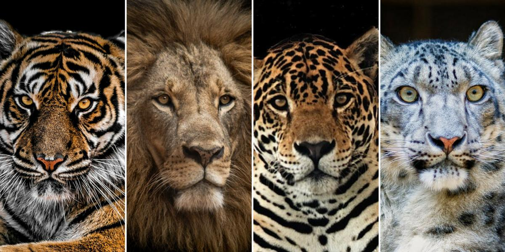
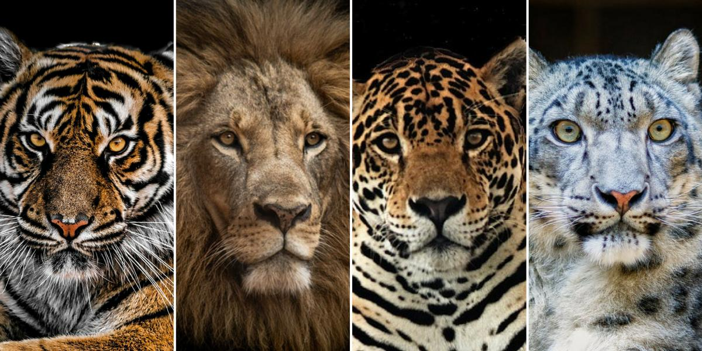

FELINOS
INFORMACIÓN BÁSICA
Los felinos o félidos son una familia de mamíferos del orden de los carnívoros,
Son de cuerpo esbelto y ágil para saltar, cabeza globosa, hocico corto y ancho,
lengua áspera, ojos grandes, dirigidos hacia delante, y dentición especialmente
carnívora, reducida en número, con enormes caninos y muelas carniceras.
Son digitígrados, con uñas retráctiles, salvo el guepardo,
y con almohadillas platares, que hacen su marcha silenciosa.
 

Clases de Felinos
- El Tigre
- El Tigre Blanco
- El Lince
- El León
Clases de Felinos
- El Tigre
- El Tigre Blanco
- El Lince
- El León
___El TIGRE___
Poema sobre Félinos
Los gatos
Charles Baudelaire
Los amantes fervientes, los sabios venerables,
Sienten, cuando maduros, igual predilección
Por los gatos, orgullo de la casa, que son
Como ellos sedentarios y al frío vulnerables.
Amigos de la ciencia y la sensualidad,
Prefieren el silencio y las tinieblas crueles.
Del Erebo serían los fúnebres corceles
Si su altivez cediese ante la majestad.
Cuando sueñan, adoptan las nobles actitudes
De las grandes esfinges que en vastas latitudes
Solitarias se pierden en un sueño inmutable.
Mágicas chispas arden en sus grupas tranquilas
Y partículas de oro, como arena impalpable,
Alumbran vagamente sus místicas pupilas.
Elaborado por: Alejandro Romero Curso: